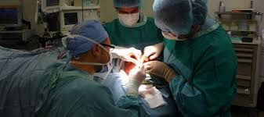
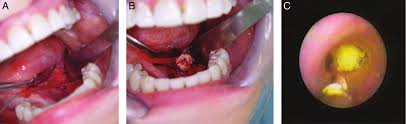
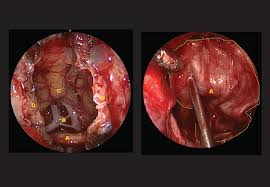
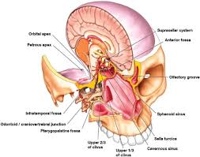

Otology is a subspecialty of otolaryngology which focuses on the diseases of the ear and connecting structures. Types of Ear Surgery
1.Microsurgery on the Ear: The structures inside the ear are very small, so the development of microsurgery has made it easier to perform more extensive surgery within this confined space. Microsurgery is used for ear drum repair, to locate and remove small ear tumors, and to repair the bones within the ear if they have become damaged, or have degenerated. Surgery is performed through the ear drum, and then involves an ear drum reconstruction.
2.Laser Surgery and the Ear: Laser surgery is an integral technique used in the operation to replace damaged inner ear bones. The instruments are introduced into the inner ear through an incision in the ear drum, and then a laser is used to vaporize what is left of the damaged hammer, anvil or stirrup bone. This technique is far better than using tools to physically break up the bone remnants, as the very act of chipping in the inner ear can damage the delicate sensory cells involved in hearing.
3.Fitting a Cochlear Implant: Surgery to fit a cochlear implant is a tricky procedure and the operation can take about 4 hours. A general anesthetic is required and it is normal to have to stay in hospital for at least two days. Although the microphone part of the cochlear implant is worn on the outside of the skull, usually just above the ear, the internal components have to be implanted under the skin and inside the inner ear itself. The processor is implanted under the skin and is attached to the microphone and then the processor is linked to tiny micro electrode arrays that are implanted directly inside the cochlea, and attached to the auditory nerve. After about 6 weeks of healing, the processor is activated, and then a long and intense period of training begins, to enable the person with the implant to the maximum benefit from it.
4.Removal of Ear Tumors: Ear tumors are rare but even very small tumors such as acoustic neuroma that form inside the inner ear, particularly on the auditory nerve, can have a severe impact on hearing and the sense of balance. Surgery to remove such tumors can be successful, but microsurgery and great skill is required to avoid damaging the nerve and sensory cells in the process. Surgeons are trying to improve the techniques all the time and a recent research study showed a greater chance of success if the incision was made behind the ear, to gain access to the tumor, rather from coming in from the top of the ear
Audiologists are trained to diagnose, manage and treat hearing or balance problems for individuals of all age groups. If you or a family member suspect that you have a hearing problem or a balance problem, contact to our center. After carefully reviewing your health history and evaluating your hearing, an audiologist will determine whether your condition might be medically treatable and will refer you to an appropriate professional. If your condition is not medically treatable, he or she will review any recommendations for audio logic care or treatment which may include hearing aids, aural rehabilitation or balance therapy.
Hearing Screening:b A hearing screening is a quick test to see how well you hear different sounds. You either pass or fail the screening. If you pass, you do not need to do anything else. If you fail, you may need more testing to see if you have a hearing loss. You can have a hearing screening at any age. Most babies have a hearing screening before they leave the hospital. Children get screenings at school or at the doctor’s office. Adults can go to doctors or Company Health checkup camps for screening.
Hearing Aids: Medicine or surgery can fix some types of hearing problems. For example, your child may have problems hearing when she has a hearing loss. The hearing loss will go away when the infection clears. For other types of hearing loss, a hearing aid may help. An audiologist can find the best type of hearing aid for you. You may need only one hearing aid. Or, you may have hearing loss in both ears. In this case, two hearing aids may be better. Wearing two hearing aids
• helps you figure out where sounds come from,
• makes it easier to hear in noisy places, and
• makes your hearing better overall.
The audiologist will make sure you get the right hearing aid for you. She will teach you how to use it and take care of it. She can answer questions about your hearing loss and hearing aids.
This center of the body includes the important nerves that control sight, smell, hearing, and the face. In the head and neck area, otolaryngologists are trained to treat infectious diseases, both benign and malignant (cancerous) tumors, facial trauma, and deformities of the face. They perform both cosmetic plastic and reconstructive surgery.
Head and neck surgery is a multi-disciplinary specialty, made up of predominantly Otolaryngology, Head and Neck Surgery (ENT) trained specialists, other surgeons trained in head and neck surgery include general surgeons, plastic surgeons and maxilla-facial surgeons.
Head and neck surgery is a multi-disciplinary specialty, made up of predominantly Otolaryngology, Head and Neck Surgery (ENT) trained specialists, other surgeons trained in head and neck surgery include general surgeons, plastic surgeons and maxilla-facial surgeons.
Head and neck surgeons operate predominantly in the head and neck, but have to be able to operate on all parts of the body in order to gain tissue for reconstruction. This surgery is also known as microsurgery and involves harvesting bone, muscle and skin from distant parts of the body in order to reconstruct a defect in the head and neck.
Sleep and Snoring Clinic is an integrated service which dedicated to the treatment of sleep disorder, insomnia, including relaxation therapy and more.

Sleep and Snoring Clinic is an integrated service which dedicated to the treatment of sleep disorder, insomnia, including relaxation therapy and more. Sleep disorders is a medical disorder of the sleep patterns. Some sleep disorders are serious enough to interfere normal physical, mental and emotional functioning. A test commonly ordered for sleep disorders is Polysomnography or Sleep study.
Sleep study allows doctors to measure how much and how well you sleep, and show whether you have sleep problems and how severe they are. Sleep studies are important because untreated sleep
disorders can increase the risk of high blood pressure, heart attack, stroke and other medical conditions. Sleep disorders also link to an increased risk of injury due to falls and car accidents. The various of sleep study provided in Our Sleep and Snoring Clinic are:
• Overnight polisomnography
• Daytime Nap Test or Multiple Sleep Latency Test (MSLT)
• Drug-induced Sleep Endoscopy(DISE)
Our Sleep and Snoring Clinic also provide the comprehensive treatment of insomnia. Insomnia is a condition of having problem falling or staying asleep. This condition can range from mild to severe, depending on how often it occurs and for how long. Our Sleep and snoring Clinic provides the treatment for chronic insomnia such as:
• Sleep Hygiene
• Relaxation Therapy
• Sleep Restriction Therapy
• Cognitive Behavioral Therapy
Sialoendoscopy (Salivary gland endoscopy & Treatment for strictures , stones etc)
Sialoendoscopy (commonly referred to as Sialendoscopy) is a minimally invasive technique that allows for salivary gland surgery for the safe and effective treatment of obstructive salivary gland disorders and other conditions of the salivary glands.
Ours is the first center in Pune to offer services of sialoendoscopy for both Diagnostic as well as Therapeutic purposes.
During sialoendoscopy a small endoscope is placed into the salivary glands through the salivary ducts that empty into the mouth. Sialoendoscopy is an efficient yet simple mode of treatment for major salivary gland obstructions, strictures and sialoliths (salivary stones). Depending on the obstruction, sialoendoscopy can be conducted under local anesthesia in an outpatient office or in the operating room under general anesthesia’s.
Nasal endoscopy is a procedure to look at the nasal and sinus passages. It’s done with an endoscope. This is a thin, flexible tube with a tiny camera and a light. An ear, nose, and throat doctor (otolaryngologist) will often do this procedure in his or her office. The sinuses are a group of spaces formed by the bones of your face. They connect with your nasal cavity. This is the air-filled space behind your nose.
 During the procedure, the healthcare provider inserts the endoscope into your nose. He or she guides it through your nasal and sinus passages. Images of the area can be seen through the endoscope. This can aid in the diagnosis and treatment of health conditions. In some cases, small tools may be used to take tiny samples of tissue or do other tasks.
You might need a nasal endoscopy if your healthcare provider needs more information about problems such as:
• Nasal congestion
• Nasal blockage
• Nasal and sinus infection (rhino sinusitis)
• Nasal polyps
• Nasal tumors
• Nosebleeds
• Loss of ability to smell
• Cerebrospinal fluid leak (CSF Rhinorrhoea)
Some additional test sometimes used
• Video stroboscope: A camera is combined with a flashing light to provide a slow-motion view of your vocal cords as they move.
• Sound (acoustic) analysis: Using computer analysis, We can measure irregularities in the sound produced by the vocal cords.
• Laryngeal electromyography: Small needles are inserted through the skin to measure the electric currents in your voice box muscles.
Microscopic voice surgery, otherwise known as micro laryngeal surgery, is a minimally invasive procedure used to correct the following:
• Voice disorders
• Speaking or breathing difficulties
• Other problems affecting the larynx
The larynx is located in the front of the neck and helps us breathe, swallow, speak and controls the opening and closing of the windpipe. The larynx is also where the vocal cords are found.
If you suffer from persistent cough, hoarseness or various voice problems, diagnostic testing can conclude if Microscopic voice surgery is right for you. This procedure is commonly used to treat the following conditions:
• Lesions
• Cysts
• Benign tumors
• Granulomas
Microscopic voice surgery removes these abnormal growths on the larynx. These are typically noncancerous growths that may develop in the area of the vocal folds as a result of persistent irritation or trauma. They can have a wide variety of causes, including vocal overuse, coughing, acid reflux and more.
According to the leading experts in allergy, an allergic reaction begins in the immune system. Our immune system protects us from invading organisms that can cause illness. If you have an allergy, your immune system mistakes an otherwise harmless substance as an invader. If you have an allergy, your immune system mistakes an otherwise harmless substance as an invader. This substance is called an allergen. The immune system overreacts to the allergen by producing Immunoglobulin E (IgE) antibodies. These antibodies travel to cells that release histamine and other chemicals, causing an allergic reaction.
Allergy Symptoms An allergic reaction typically triggers symptoms in the nose, lungs, throat, sinuses, ears, lining of the stomach or on the skin. For some people, allergies can also trigger symptoms of asthma. In the most serious cases, a life-threatening reaction called anaphylaxis (an-a-fi-LAK-sis) can occur.
A number of different allergens are responsible for allergic reactions. The most common include:
• Pollen
• Dust
• Food
• Insect stings
• Animal dander
• Mold
• Medications/Drugs
• Latex
Treatment For allergy sufferers, the best treatment is to avoid the offending allergens altogether. This may be possible if the allergen is a specific food, like peanuts, which can be cut out of the diet, but not when the very air we breathe is loaded with allergens, such as ragweed pollen.
Antihistamines These medications counter the effects of histamine, the substance that makes eyes water and noses itch and causes sneezing during allergic reactions. Sleepiness was a problem with the oldest antihistamines, but the newest drugs do not cause such a problem.
Nasal steroids These anti-inflammatory sprays help decrease inflammation, swelling, and mucus production. They work well alone and, for some people, in combination with antihistamines; in recommended doses, they are relatively free of side effects.
Cromolyn sodium A nasal spray, cromolyn sodium can help stop hay fever, perhaps by blocking release of histamine and other symptom-producing chemicals. It has few side effects.
Decongestants Available in capsule and spray form, decongestants may reduce swelling and sinus discomfort. Intended for short-term use, they are usually used in combination with antihistamines. Long-term usage of spray decongestants can actually make symptoms worse, while decongestant pills do not have this problem.
Immunotherapy Immunotherapy (allergy shots) might provide relief for patients who don't find relief with antihistamines or nasal steroids. Allergy shots alter the body's immune response to allergens, thereby helping to prevent allergic reactions. They are the only form of treatment that can induce long-lasting protection for several years after therapy is stopped. Current immunotherapy treatments are limited because of potential allergic reactions; rarely, these can be severe.
It can be done for medical reasons -- such as to correct breathing problems related to the nose or correct disfigurement resulting from trauma or birth defects.
It can also be done for cosmetic reasons, which will change the nose's shape and appearance.
Risks As with any major surgery, rhinoplasty carries risks such as bleeding, infection and an adverse reaction to the anesthesia. Other possible risks specific to rhinoplasty include:
Cosmetic Surgery Cosmetic surgery, also referred to as aesthetic surgery, is a surgical procedure which endeavors to improve the physical aspects of one's appearance to become more aesthetically pleasing. The continuously growing field of cosmetic surgery is closely linked with plastic surgery, the difference being, cosmetic surgery is an elective surgery with the sole purpose to enhance the physical features of one's appearance. Plastic surgery is performed in order to rectify defects to reinstate normality to function and appearance. Cosmetic surgical procedures are generally performed on healthy functioning body parts, with the procedure being optional not medically necessary. The inevitable aim of cosmetic surgery is to enhance one's image, encompassing reducing the signs of aging and/or correction of a believed deviation on one's body in turn it is surrounded by controversy
Symptoms A person with vertigo will have a sense that their head, or their surrounding environment, is moving or spinning. Vertigo can be a symptom of other conditions, and it can also have its own set of related symptoms. These include:
Vertigo is not just a general feeling of faintness. It is a rotational dizziness.
Treatment for Vertigo Treatment for vertigo depends on what's causing it. In many cases, vertigo goes away without any treatment. This is because your brain is able to adapt, at least in part, to the inner ear changes, relying on other mechanisms to maintain balance. For some, treatment is needed and may include:
Vestibular rehabilitation This is a type of physical therapy aimed at helping strengthen the vestibular system. The function of the vestibular system is to send signals to the brain about head and body movements relative to gravity. Vestibular rehab may be recommended if you have recurrent bouts of vertigo. It helps train your other senses to compensate f
Canalith repositioning maneuvers There are the series of specific head and body movements for BPPV. The movements are done to move the calcium deposits out of the canal into an inner ear chamber so they can be absorbed by the body. You will likely have vertigo symptoms during the procedure as the canaliths move.
A doctor or physical therapist can guide you through the movements. The movements are safe and often effective.
Medicine In some cases, medication may be given to relieve symptoms such as nausea or motion sickness associated with vertigo. If vertigo is caused by an infection or inflammation, antibiotics or steroids may reduce swelling and cure infection. For Meniere's disease, diuretics (water pills) may be prescribed to reduce pressure from fluid buildup.
Surgery In a few cases, surgery may be needed for vertigo. If vertigo is caused by a more serious underlying problem, such as a tumor or injury to the brain or neck, treatment for those problems may help to alleviate the vertigo.